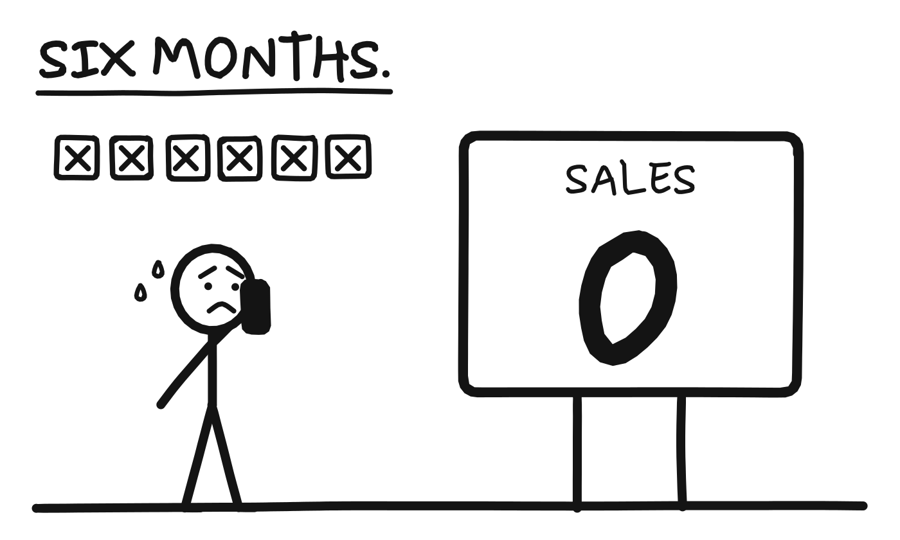
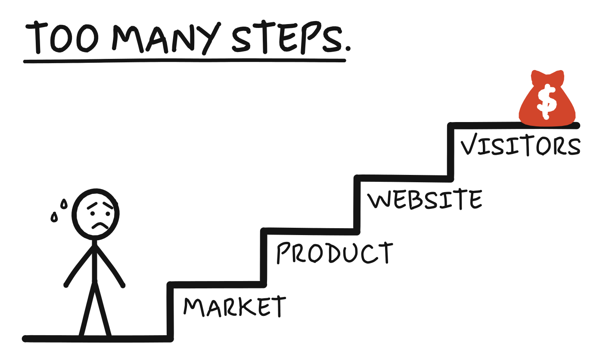
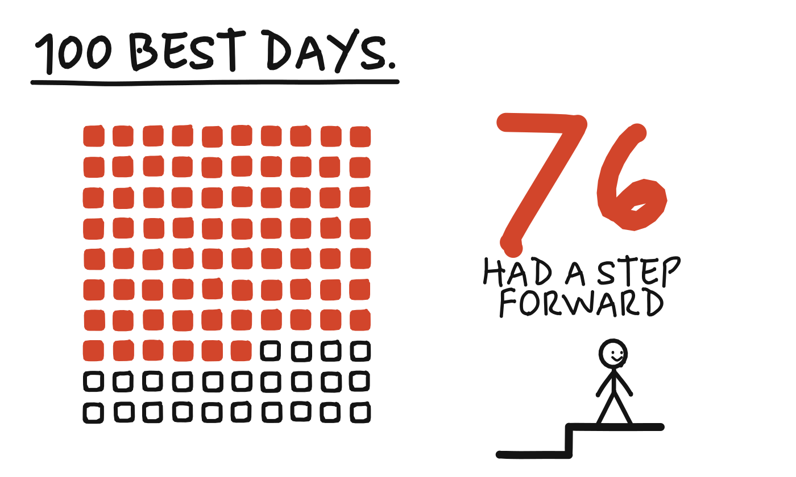
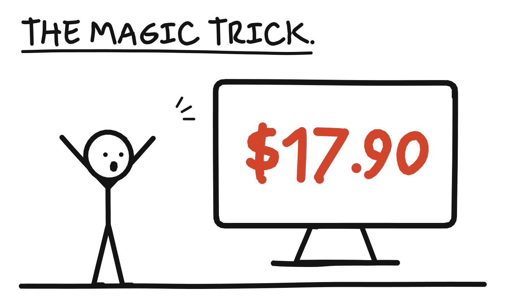
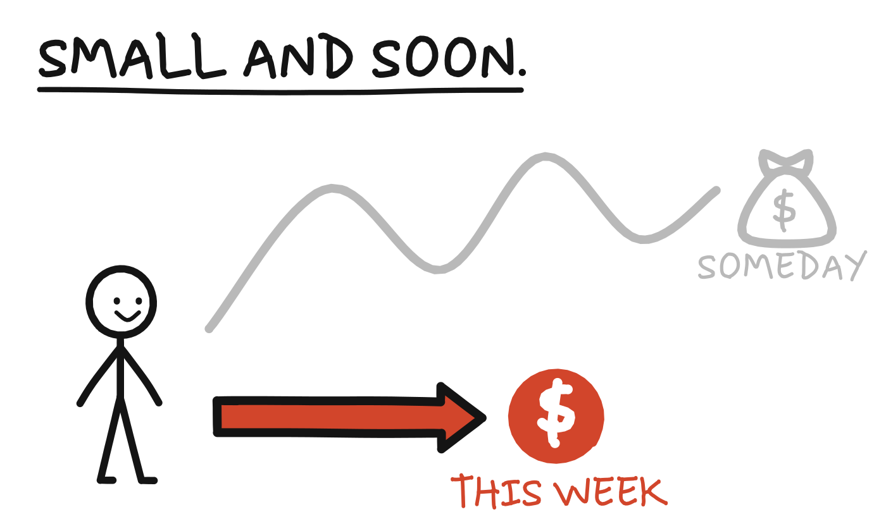
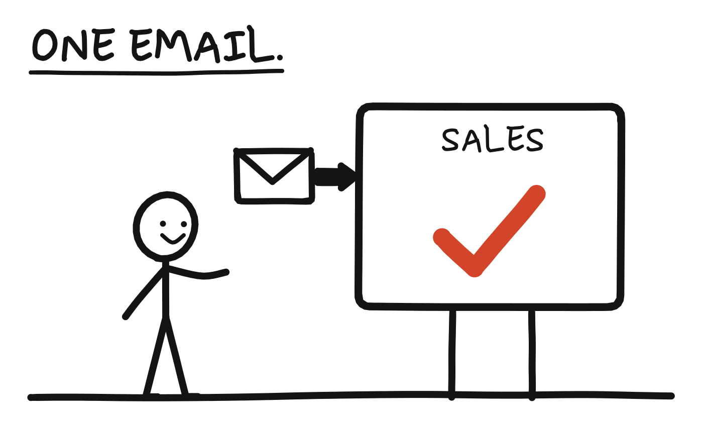

Want the whole conversation? Read the full interview with Russell Brunson.
I'd found network marketing, and I was mesmerized.
You bring people in, they bring people in, and you get paid every month on what the whole team does. I thought it was the perfect plan. Everyone should do this.
So I did exactly what they told me to do.
I bought leads. Names, phone numbers, email addresses.
$500 a month. And I called them.
Six months in, not one of them had joined my team. Not one.
I had a coach, Paul. We'd meet and he'd look at where I was.
"Yeah. You should have a sale by now."
"Dude, I'm doing this shit. I promise."
And I was.

Six months of calls, and nothing had come back.
If you're building something of your own, I'd bet you know that scoreboard.
You're doing the work. You're up late doing it.
And the question creeping in isn't "what do I do next?"
It's "is something wrong with me?"
Years later I interviewed my friend Russell Brunson, and he answered that question for me.
Russell had run a big coaching company. Sixty salespeople. Twenty full-time coaches.
They taught people to build a business online the way most courses teach it. Pick your market. Create a product. Build the website. Get people to visit.
He still believed in it when we talked. "I am 100% behind that method."
Here's what he watched happen.
People paid $5,000. His coaches spent weeks and months with them.
And thousands of them never got past making the product or putting up their first page.
They had the plan. They'd paid. They had a coach on the phone.
Then Russell told me why they stopped.
"If they don't have success within a week or two, most of them are out."

The plan was right. The first win was at the top of it.
Read that part of our conversation.
Look at who those people were, because they let you off the hook.
They didn't lack information. They'd paid $5,000 for it.
And effort wasn't my problem. I made my calls.
What I lacked, and what I'd bet they lacked, was one piece of proof that this works for me.
Some people last a long time without it. Russell told me he tried one thing after another for two years before anything worked. I went six months.
Most people don't last that long. Nobody should have to.
Because every week with nothing coming back, it gets harder to pick up the phone.
There's a study that gets at why.*
Two researchers, Teresa Amabile of Harvard Business School and Steven Kramer, had 238 people at seven companies keep a daily diary of their work. Nearly 12,000 days of it.
Then they sorted out the days people felt best and looked for what those days had in common.
On 76% of them, the person had made progress in their work. Even a small step. Nothing else came close.

Out of every 100 best days, 76 had a step forward in them.
Now, those were people with jobs, on teams.
You're on your own. Nobody is going to hand you a step forward.
So you set one up yourself. And it can be small.
Here's how small.
Russell still remembers his first sale.
He was in college at Boise State. He told his teacher he had to go to the bathroom, and went to the computer lab.
He'd been recommending somebody else's software online, the kind of deal where you get a cut when someone buys. Somebody bought.
$20 showed up in his account.
"I was freaking out."
Then he asked about mine.
Mine came from a different corner of my life than the phone calls. Same feeling.
I'd put up one tiny ad on Google. It pointed at somebody else's site, some place to download MP3s. If anyone bought, I got a cut. I didn't think much of it.
The next day there was $17.90 in my account.
Some person on the other side of the globe, who didn't know me, had bought something because I pointed at it.
It was the coolest magic trick in the world. I was absolutely hooked.
$20. $17.90. Look at the size of those.
$20 doesn't change anybody's bank account. It did something else.
Russell's words: "Someone giving me money was what motivated me to do everything else."

The amount isn't the point. That it happened is.
Read both first-sale stories in our conversation.
How do you get a brand-new person that feeling in days, and not after months?
Russell turned the question around.
He asked: "If you lost everything today, what would you do?"
"What's the shortest path to cash, from the day I start to tomorrow?"
Making your own product takes too long. So he took it out of the start. His students began by recommending something that was already selling.
The full plan didn't go away. It moved to second.
His target was a first sale "in the first seven to 14 days."
I'd stumbled into that same order myself. Win first.
After my six months of nothing, I joined a different network marketing company, Success University. It sold personal development courses.
And I still had all those leads. I'd already paid for them. They were just sitting there.
For six months I'd reached them one phone call at a time.
This time I wrote one email about what I'd joined and sent it to all of them.
A couple of people joined.
The email cost me nothing. Those leads were people I could already reach, and I reached every one of them in a day.
That was my first momentum.
Notice it wasn't cash in my hand. It was a couple of people saying yes.
That's all a first win is. Somebody says yes, and you watch it happen.

Same person, same day. One of these has a win on it this week.
No. Nobody got rich that week.
Russell's first sale was $20. One of mine was $17.90. The one that started my team was a couple of people saying yes.
A small win isn't the business. It's the proof you run on while you build the business.
Small and soon. The big plan comes after.
Here's what I did with that yes, one step at a time, over months.
A couple of people had said yes to an email. So I paid to put an ad in somebody else's email newsletter. More people joined. So I ran about thirty more.
By then I had a team. When I couldn't afford the next ads on my own, we chipped in and bought them together.
Two or three months in, Matt Morris, who ran the company, noticed. "Hey man, what are you up to?"
He had me train his people. I wrote down what I was doing so my own team could copy it, and that turned into my first book.
Matt offered the book to his members. It did $6,000 in a day.
I remember thinking, "Whoa. One day?"
That day was a long way from the email. Every step stood on the one before it, and the first step was one email.
None of it happens if I'm still on the phone in month seven, staring at a zero.
Leave your big plan right where it is. It'll be there in two weeks.
Get one sheet of paper and answer three things.
Then ask. Say it plain: "I can help you with that. Want me to?"
A yes doesn't have to come with money this week. Mine didn't.
And this isn't about talking your family into anything. It's one person, one real problem, one small offer.
"What if I go for a small win and miss?"
Then you've found out in a week what took me six months: that path doesn't get there.
A miss costs you a week. You change one thing and ask again.
Nothing was wrong with me, by the way. Nothing is wrong with you. The path to the first yes was too long.
You're not trying to make a living this week.
You're trying to hear one yes.
Six months of calls gave me a zero.
One email gave me a yes.
Everything I've built since, I built on that.

Same guy. Same leads. A shorter path.
Three More Things.
Remember my team chipping in to buy ads together? Years later I suggested the same thing to Russell, and he put it into his program. "This is something I got from you," he told me. His members chipped in over $50,000 in 30 days to buy ads together. Read that part.
Our whole conversation is here. We recorded it around 2013, so the tools we talk about are from then. The thinking holds.
Two more lessons from people I learned from: John Alanis and Lloyd Irvin.
*Teresa Amabile and Steven Kramer, The Progress Principle, Harvard Business Review Press, 2011.